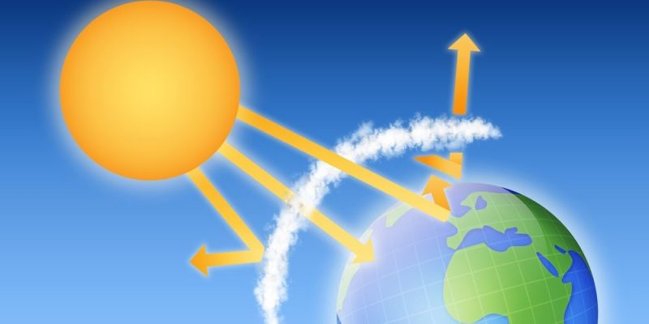

El efecto invernadero
El “efecto invernadero” es el calentamiento que se produce cuando ciertos gases de la atmósfera de la Tierra retienen el calor. Estos gases dejan pasar la luz pero mantienen el calor como las paredes de cristal de un invernadero.
En primer lugar, la luz solar brilla en la superficie terrestre, donde es absorbida y, a continuación, vuelve a la atmósfera en forma de calor. En la atmósfera, los gases de invernadero retienen parte de este calor y el resto se escapa al espacio. Cuantos más gases de invernadero, más calor es retenido.
Los científicos conocen el efecto invernadero desde 1824, cuando Joseph Fourier calculó que la Tierra sería más fría si no hubiera atmósfera. Este efecto invernadero es lo que hace que el clima en la Tierra sea apto para la vida. Sin él, la superficie de la Tierra sería unos 60 grados Fahrenheit más fría. En 1895, el químico suizo Svante Arrhenius descubrió que los humanos podrían aumentar el efecto invernadero produciendo dióxido de carbono, un gas de invernadero. Inició 100 años de investigación climática que nos ha proporcionado una sofisticada comprensión del calentamiento global.
Los niveles de gases de efecto invernadero (GEI) han aumentado y descendido durante la historia de la Tierra pero han sido bastante constantes durante los últimos miles de años. Las temperaturas medias globales se han mantenido bastante constantes también durante este periodo de tiempo hasta hace poco. A través de la combustión de combustibles fósiles y otras emisiones de GEI, los humanos están aumentando el efecto invernadero y calentando la Tierra.
Los científicos a menudo utilizan el término cambio climático en lugar de calentamiento global. Esto es porque, dado que la temperatura media de la Tierra aumenta, los vientos y las corrientes oceánicas mueven el calor alrededor del globo de modo que pueden enfriar algunas zonas, calentar otras y cambiar la cantidad de lluvia y de nieve que cae. Como resultado, el clima cambia de manera diferente en diferentes áreas.
